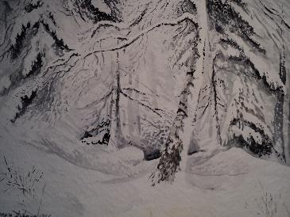
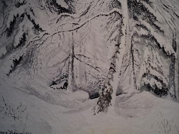

Om Ingvar Andersson
Ingvar Andersson, fil.kand., konstnär, född 1947 i Stockholm, är främst akvarellist. Åren 1966-68 studerade han hos ABF och Idun Lovéns målarskola. Universitetsstudier 1969-74. Slutligen studier i kinesisk kalligrafi under dr Tien Lung, Östasiatiska Museet 1971-76.
Ingvar Andersson berättar i färg sina naturuppleveler så realistiskt, att man känner sig själv stå där han ställt sitt staffli.
Och eftersom han valt det vi alla älskar; svenska björkhagar fulla med vitsippor, skogslandskap med marken täckt av mossor i sköna färger, vinterstudier där snön hänger tung på grenarna, vårvinterbilder med snöfläckar och porlande bäckar etc, så känner vi alla igen oss och vill ha målningarna för att njuta av dem dag efter dag, antingen vi bor i storstaden eller i en något mindre steril miljö.
Det budskap Ingvar Anderssons akvareller har förstår vi och känner glädje inför.